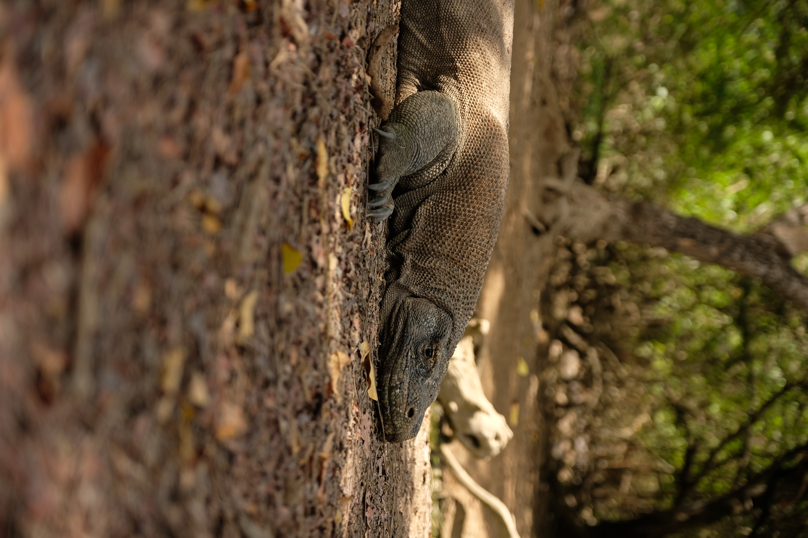

The Experience
More than just the dragons
Komodo was one of those journeys that turned out to be about far more than we expected. We came for the famous dragons, but quickly discovered that the real magic lies in the islands, the water and the experience of exploring them by boat.
We split our time between the beautiful AYANA Komodo Waecicu Beach and three unforgettable nights aboard Samara 2. Being able to wake up somewhere completely different each morning, surrounded by turquoise water, dramatic islands and almost no signs of civilisation, made the trip feel genuinely special.
Of course, seeing Komodo dragons in their natural environment is unforgettable. But it was the combination of wildlife, incredible snorkelling, deserted beaches and life aboard Samara 2 that made this journey one we would happily do again.
